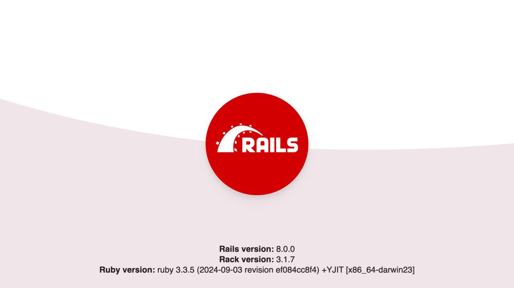
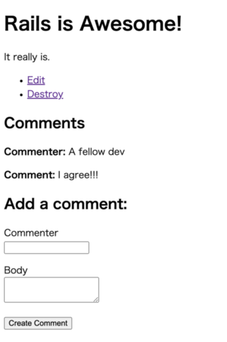

DO NOT READ THIS FILE ON GITHUB, GUIDES ARE PUBLISHED ON https://guides.rubyonrails.org.
Getting Started with Rails
This guide covers getting up and running with Ruby on Rails.
After reading this guide, you will know:
- How to install
Rails, create a newRailsapplication, and connect your application to a database. - The general layout of a
Railsapplication. - The basic principles of MVC (Model, View, Controller) and RESTful design.
- How to quickly generate the starting pieces of a
Railsapplication.
Guide Assumptions
This guide is designed for beginners who want to get started with creating a Rails
application from scratch. It does not assume that you have any prior experience
with Rails.
Rails is a web application framework running on the Ruby programming language.
If you have no prior experience with Ruby, you will find a very steep learning
curve diving straight into Rails. There are several curated lists of online resources
for learning Ruby:
- Official Ruby Programming Language website
- [List of Free Programming Books]#ruby)
Be aware that some resources, while still excellent, cover older versions of
Ruby, and may not include some syntax that you will see in day-to-day
development with Rails.
What is Rails?
Rails is a web application development framework written in the Ruby programming language.
It is designed to make programming web applications easier by making assumptions
about what every developer needs to get started. It allows you to write less
code while accomplishing more than many other languages and frameworks.
Experienced Rails developers also report that it makes web application
development more fun.
Rails is opinionated software. It makes the assumption that there is a "best"
way to do things, and it's designed to encourage that way - and in some cases to
discourage alternatives. If you learn "The Rails Way" you'll probably discover a
tremendous increase in productivity. If you persist in bringing old habits from
other languages to your Rails development, and trying to use patterns you
learned elsewhere, you may have a less happy experience.
The Rails philosophy includes two major guiding principles:
- Don't Repeat Yourself: DRY is a principle of software development which states that "Every piece of knowledge must have a single, unambiguous, authoritative representation within a system". By not writing the same information over and over again, our code is more maintainable, more extensible, and less buggy.
- Convention Over Configuration:
Railshas opinions about the best way to do many things in a web application, and defaults to this set of conventions, rather than require that you specify minutiae through endless configuration files.
Creating a New Rails Project
The best way to read this guide is to follow it step by step. All steps are essential to run this example application and no additional code or steps are needed.
By following along with this guide, you'll create a Rails project called
blog, a (very) simple weblog. Before you can start building the application,
you need to make sure that you have Rails itself installed.
NOTE: The examples below use $ to represent your terminal prompt in a UNIX-like OS,
though it may have been customized to appear differently. If you are using Windows,
your prompt will look something like C:\source_code>.
Installing Rails
Before you install Rails, you should check to make sure that your system has the
proper prerequisites installed. These include:
- Ruby
- SQLite3
Installing Ruby
Open up a command line prompt. On macOS open Terminal.app; on Windows choose
"Run" from your Start menu and type cmd.exe. Any commands prefaced with a
dollar sign $ should be run in the command line. Verify that you have a
current version of Ruby installed:
$ ruby --version
ruby 3.1.0
Rails requires Ruby version 3.1.0 or later. It is preferred to use the latest Ruby version. If the version number returned is less than that number (such as 2.3.7, or 1.8.7), you'll need to install a fresh copy of Ruby.
To install Rails on Windows, you'll first need to install Ruby Installer.
For more installation methods for most Operating Systems take a look at ruby-lang.org.
Installing SQLite3
You will also need an installation of the SQLite3 database. Many popular UNIX-like OSes ship with an acceptable version of SQLite3. Others can find installation instructions at the SQLite3 website.
Verify that it is correctly installed and in your load PATH:
$ sqlite3 --version
The program should report its version.
Installing Rails
To install Rails, use the gem install command provided by RubyGems:
$ gem install rails
To verify that you have everything installed correctly, you should be able to run the following in a new terminal:
$ rails --version
Rails 7.2.0
If it says something like "Rails 7.2.0", you are ready to continue.
Creating the Blog Application
Rails comes with a number of scripts called generators that are designed to make your development life easier by creating everything that's necessary to start working on a particular task. One of these is the new application generator, which will provide you with the foundation of a fresh Rails application so that you don't have to write it yourself.
To use this generator, open a terminal, navigate to a directory where you have rights to create files, and run:
$ rails new blog
This will create a Rails application called Blog in a blog directory and
install the gem dependencies that are already mentioned in Gemfile using
bundle install.
TIP: You can see all of the command line options that the Rails application
generator accepts by running rails new --help.
After you create the blog application, switch to its folder:
$ cd blog
The blog directory will have a number of generated files and folders that make
up the structure of a Rails application. Most of the work in this tutorial will
happen in the app folder, but here's a basic rundown on the function of each
of the files and folders that Rails creates by default:
| File/Folder | Purpose |
|---|---|
| app/ | Contains the controllers, models, views, helpers, mailers, channels, jobs, and assets for your application. You'll focus on this folder for the remainder of this guide. |
| bin/ | Contains the rails script that starts your app and can contain other scripts you use to set up, update, deploy, or run your application. |
| config/ | Contains configuration for your application's routes, database, and more. This is covered in more detail in Configuring Rails Applications. |
| config.ru | Rack configuration for Rack-based servers used to start the application. For more information about Rack, see the Rack website. |
| db/ | Contains your current database schema, as well as the database migrations. |
| Dockerfile | Configuration file for Docker. |
| Gemfile Gemfile.lock |
These files allow you to specify what gem dependencies are needed for your Rails application. These files are used by the Bundler gem. For more information about Bundler, see the Bundler website. |
| lib/ | Extended modules for your application. |
| log/ | Application log files. |
| public/ | Contains static files and compiled assets. When your app is running, this directory will be exposed as-is. |
| Rakefile | This file locates and loads tasks that can be run from the command line. The task definitions are defined throughout the components of Rails. Rather than changing Rakefile, you should add your own tasks by adding files to the lib/tasks directory of your application. |
| README.md | This is a brief instruction manual for your application. You should edit this file to tell others what your application does, how to set it up, and so on. |
| storage/ | Active Storage files for Disk Service. This is covered in Active Storage Overview. |
| test/ | Unit tests, fixtures, and other test apparatus. These are covered in Testing Rails Applications. |
| tmp/ | Temporary files (like cache and pid files). |
| vendor/ | A place for all third-party code. In a typical Rails application this includes vendored gems. |
| .dockerignore | This file tells Docker which files it should not copy into the container. |
| .gitattributes | This file defines metadata for specific paths in a git repository. This metadata can be used by git and other tools to enhance their behavior. See the gitattributes documentation for more information. |
| .github/ | Contains GitHub specific files. |
| .gitignore | This file tells git which files (or patterns) it should ignore. See GitHub - Ignoring files for more information about ignoring files. |
| .rubocop.yml | This file contains the configuration for RuboCop. |
| .ruby-version | This file contains the default Ruby version. |
Hello, Rails!
To begin with, let's get some text up on screen quickly. To do this, you need to get your Rails application server running.
Starting Up the Web Server
You actually have a functional Rails application already. To see it, you need to
start a web server on your development machine. You can do this by running the
following command in the blog directory:
$ bin/rails server
TIP: If you are using Windows, you have to pass the scripts under the bin
folder directly to the Ruby interpreter e.g. ruby bin\rails server.
TIP: JavaScript asset compression requires you to
have a JavaScript runtime available on your system, in the absence
of a runtime you will see an execjs error during asset compression.
Usually macOS and Windows come with a JavaScript runtime installed.
therubyrhino is the recommended runtime for JRuby users and is added by
default to the Gemfile in apps generated under JRuby. You can investigate
all the supported runtimes at ExecJS.
This will start up Puma, a web server distributed with Rails by default. To see your application in action, open a browser window and navigate to http://localhost:3000. You should see the Rails default information page:

When you want to stop the web server, hit Ctrl+C in the terminal window where it's running. In the development environment, Rails does not generally require you to restart the server; changes you make in files will be automatically picked up by the server.
The Rails startup page is the smoke test for a new Rails application: it makes sure that you have your software configured correctly enough to serve a page.
Say "Hello", Rails
To get Rails saying "Hello", you need to create at minimum a route, a controller with an action, and a view. A route maps a request to a controller action. A controller action performs the necessary work to handle the request, and prepares any data for the view. A view displays data in a desired format.
In terms of implementation: Routes are rules written in a Ruby DSL (Domain-Specific Language). Controllers are Ruby classes, and their public methods are actions. And views are templates, usually written in a mixture of HTML and Ruby.
Let's start by adding a route to our routes file, config/routes.rb, at the
top of the Rails.application.routes.draw block:
Rails.application.routes.draw do
get "/articles", to: "articles#index"
# For details on the DSL available within this file, see https://guides.rubyonrails.org/routing.html
endThe route above declares that GET /articles requests are mapped to the index
action of ArticlesController.
To create ArticlesController and its index action, we'll run the controller
generator (with the --skip-routes option because we already have an
appropriate route):
$ bin/rails generate controller Articles index --skip-routes
Rails will create several files for you:
create app/controllers/articles_controller.rb
invoke erb
create app/views/articles
create app/views/articles/index.html.erb
invoke test_unit
create test/controllers/articles_controller_test.rb
invoke helper
create app/helpers/articles_helper.rb
invoke test_unitThe most important of these is the controller file,
app/controllers/articles_controller.rb. Let's take a look at it:
class ArticlesController < ApplicationController
def index
end
endThe index action is empty. When an action does not explicitly render a view
(or otherwise trigger an HTTP response), Rails will automatically render a view
that matches the name of the controller and action. Convention Over
Configuration! Views are located in the app/views directory. So the index
action will render app/views/articles/index.html.erb by default.
Let's open app/views/articles/index.html.erb, and replace its contents with:
<h1>Hello, Rails!</h1>
If you previously stopped the web server to run the controller generator,
restart it with bin/rails server. Now visit http://localhost:3000/articles,
and see our text displayed!
Setting the Application Home Page
At the moment, http://localhost:3000 still displays a page with the Ruby on Rails logo. Let's display our "Hello, Rails!" text at http://localhost:3000 as well. To do so, we will add a route that maps the root path of our application to the appropriate controller and action.
Let's open config/routes.rb, and add the following root route to the top of
the Rails.application.routes.draw block:
Rails.application.routes.draw do
root "articles#index"
get "/articles", to: "articles#index"
endNow we can see our "Hello, Rails!" text when we visit http://localhost:3000,
confirming that the root route is also mapped to the index action of
ArticlesController.
TIP: To learn more about routing, see Rails Routing from the Outside In.
Autoloading
Rails applications do not use require to load application code.
You may have noticed that ArticlesController inherits from ApplicationController, but app/controllers/articles_controller.rb does not have anything like
require "application_controller" # DON'T DO THIS.Application classes and modules are available everywhere, you do not need and should not load anything under app with require. This feature is called autoloading, and you can learn more about it in Autoloading and Reloading Constants.
You only need require calls for two use cases:
- To load files under the
libdirectory. - To load gem dependencies that have
require: falsein theGemfile.
MVC and You
So far, we've discussed routes, controllers, actions, and views. All of these are typical pieces of a web application that follows the MVC (Model-View-Controller) pattern. MVC is a design pattern that divides the responsibilities of an application to make it easier to reason about. Rails follows this design pattern by convention.
Since we have a controller and a view to work with, let's generate the next piece: a model.
Generating a Model
A model is a Ruby class that is used to represent data. Additionally, models can interact with the application's database through a feature of Rails called Active Record.
To define a model, we will use the model generator:
$ bin/rails generate model Article title:string body:text
NOTE: Model names are singular, because an instantiated model represents a
single data record. To help remember this convention, think of how you would
call the model's constructor: we want to write Article.new(...), not
Articles.new(...).
This will create several files:
invoke active_record
create db/migrate/<>_create_articles.rb
create app/models/article.rb
invoke test_unit
create test/models/article_test.rb
create test/fixtures/articles.ymlThe two files we'll focus on are the migration file
(db/migrate/<timestamp>_create_articles.rb) and the model file
(app/models/article.rb).
Database Migrations
Migrations are used to alter the structure of an application's database. In Rails applications, migrations are written in Ruby so that they can be database-agnostic.
Let's take a look at the contents of our new migration file:
class CreateArticles < ActiveRecord::Migration[7.2]
def change
create_table :articles do |t|
t.string :title
t.text :body
t.
end
end
endThe call to create_table specifies how the articles table should be
constructed. By default, the create_table method adds an id column as an
auto-incrementing primary key. So the first record in the table will have an
id of 1, the next record will have an id of 2, and so on.
Inside the block for create_table, two columns are defined: title and
body. These were added by the generator because we included them in our
generate command (bin/rails generate model Article title:string body:text).
On the last line of the block is a call to t.timestamps. This method defines
two additional columns named created_at and updated_at. As we will see,
Rails will manage these for us, setting the values when we create or update a
model object.
Let's run our migration with the following command:
$ bin/rails db:migrate
The command will display output indicating that the table was created:
== CreateArticles: ===================================
-- create_table(:articles)
#=> 0.0018s
== CreateArticles: migrated (0.0018s) ==========================TIP: To learn more about migrations, see Active Record Migrations.
Now we can interact with the table using our model.
Using a Model to Interact with the Database
To play with our model a bit, we're going to use a feature of Rails called the
console. The console is an interactive coding environment just like irb, but
it also automatically loads Rails and our application code.
Let's launch the console with this command:
$ bin/rails console
You should see an irb prompt like:
Loading development environment (Rails 7.2.0)
irb(main):001:0>
At this prompt, we can initialize a new Article object:
irb> article = Article.new(title: "Hello Rails", body: "I am on Rails!")
It's important to note that we have only initialized this object. This object
is not saved to the database at all. It's only available in the console at the
moment. To save the object to the database, we must call save:
irb> article.save
(0.1ms) begin transaction
Article Create (0.4ms) INSERT INTO "articles" ("title", "body", "created_at", "updated_at") VALUES (?, ?, ?, ?) [["title", "Hello Rails"], ["body", "I am on Rails!"], ["created_at", "2020-01-18 23:47:30.734416"], ["updated_at", "2020-01-18 23:47:30.734416"]]
(0.9ms) commit transaction
=> true
The above output shows an INSERT INTO "articles" ... database query. This
indicates that the article has been inserted into our table. And if we take a
look at the article object again, we see something interesting has happened:
irb> article
=> #<Article id: 1, title: "Hello Rails", body: "I am on Rails!", created_at: "2020-01-18 23:47:30", updated_at: "2020-01-18 23:47:30">
The id, created_at, and updated_at attributes of the object are now set.
Rails did this for us when we saved the object.
When we want to fetch this article from the database, we can call find
on the model and pass the id as an argument:
irb> Article.find(1)
=> #<Article id: 1, title: "Hello Rails", body: "I am on Rails!", created_at: "2020-01-18 23:47:30", updated_at: "2020-01-18 23:47:30">
And when we want to fetch all articles from the database, we can call all
on the model:
irb> Article.all
=> #<ActiveRecord::Relation [#<Article id: 1, title: "Hello Rails", body: "I am on Rails!", created_at: "2020-01-18 23:47:30", updated_at: "2020-01-18 23:47:30">]>
This method returns an ::ActiveRecord::Relation object, which
you can think of as a super-powered array.
TIP: To learn more about models, see Active Record Basics and Active Record Query Interface.
Models are the final piece of the MVC puzzle. Next, we will connect all of the pieces together.
Showing a List of Articles
Let's go back to our controller in app/controllers/articles_controller.rb, and
change the index action to fetch all articles from the database:
class ArticlesController < ApplicationController
def index
@articles = Article.all
end
endController instance variables can be accessed by the view. That means we can
reference @articles in app/views/articles/index.html.erb. Let's open that
file, and replace its contents with:
<h1>Articles</h1>
<ul>
<% @articles.each do |article| %>
<li>
<%= article.title %>
</li>
<% end %>
</ul>
The above code is a mixture of HTML and ERB. ERB, short for Embedded Ruby, is a templating system that
evaluates Ruby code embedded in a document. Here, we can see two types of ERB
tags: <% %> and <%= %>. The <% %> tag means "evaluate the enclosed Ruby
code." The <%= %> tag means "evaluate the enclosed Ruby code, and output the
value it returns." Anything you could write in a regular Ruby program can go
inside these ERB tags, though it's usually best to keep the contents of ERB tags
short, for readability.
Since we don't want to output the value returned by @articles.each, we've
enclosed that code in <% %>. But, since we do want to output the value
returned by article.title (for each article), we've enclosed that code in
<%= %>.
We can see the final result by visiting http://localhost:3000. (Remember that
bin/rails server must be running!) Here's what happens when we do that:
- The browser makes a request:
GET http://localhost:3000. - Our Rails application receives this request.
- The Rails router maps the root route to the
indexaction ofArticlesController. - The
indexaction uses theArticlemodel to fetch all articles in the database. - Rails automatically renders the
app/views/articles/index.html.erbview. - The ERB code in the view is evaluated to output HTML.
- The server sends a response containing the HTML back to the browser.
We've connected all the MVC pieces together, and we have our first controller action! Next, we'll move on to the second action.
CRUDit Where CRUDit Is Due
Almost all web applications involve CRUD (Create, Read, Update, and Delete) operations. You may even find that the majority of the work your application does is CRUD. Rails acknowledges this, and provides many features to help simplify code doing CRUD.
Let's begin exploring these features by adding more functionality to our application.
Showing a Single Article
We currently have a view that lists all articles in our database. Let's add a new view that shows the title and body of a single article.
We start by adding a new route that maps to a new controller action (which we
will add next). Open config/routes.rb, and insert the last route shown here:
Rails.application.routes.draw do
root "articles#index"
get "/articles", to: "articles#index"
get "/articles/:id", to: "articles#show"
endThe new route is another get route, but it has something extra in its path:
:id. This designates a route parameter. A route parameter captures a segment
of the request's path, and puts that value into the params Hash, which is
accessible by the controller action. For example, when handling a request like
GET http://localhost:3000/articles/1, 1 would be captured as the value for
:id, which would then be accessible as params[:id] in the show action of
ArticlesController.
Let's add that show action now, below the index action in
app/controllers/articles_controller.rb:
class ArticlesController < ApplicationController
def index
@articles = Article.all
end
def show
@article = Article.find(params[:id])
end
endThe show action calls Article.find (mentioned
previously) with the ID captured
by the route parameter. The returned article is stored in the @article
instance variable, so it is accessible by the view. By default, the show
action will render app/views/articles/show.html.erb.
Let's create app/views/articles/show.html.erb, with the following contents:
<h1><%= @article.title %></h1>
<p><%= @article.body %></p>
Now we can see the article when we visit http://localhost:3000/articles/1!
To finish up, let's add a convenient way to get to an article's page. We'll link
each article's title in app/views/articles/index.html.erb to its page:
<h1>Articles</h1>
<ul>
<% @articles.each do |article| %>
<li>
<a href="/articles/<%= article.id %>">
<%= article.title %>
</a>
</li>
<% end %>
</ul>
Resourceful Routing
So far, we've covered the "R" (Read) of CRUD. We will eventually cover the "C" (Create), "U" (Update), and "D" (Delete). As you might have guessed, we will do so by adding new routes, controller actions, and views. Whenever we have such a combination of routes, controller actions, and views that work together to perform CRUD operations on an entity, we call that entity a resource. For example, in our application, we would say an article is a resource.
Rails provides a routes method named resources
that maps all of the conventional routes for a collection of resources, such as
articles. So before we proceed to the "C", "U", and "D" sections, let's replace
the two get routes in config/routes.rb with resources:
Rails.application.routes.draw do
root "articles#index"
resources :articles
endWe can inspect what routes are mapped by running the bin/rails routes command:
$ bin/rails routes
Prefix Verb URI Pattern Controller#Action
root GET / articles#index
articles GET /articles(.:format) articles#index
new_article GET /articles/new(.:format) articles#new
article GET /articles/:id(.:format) articles#show
POST /articles(.:format) articles#create
edit_article GET /articles/:id/edit(.:format) articles#edit
PATCH /articles/:id(.:format) articles#update
DELETE /articles/:id(.:format) articles#destroy
The resources method also sets up URL and path helper methods that we can use
to keep our code from depending on a specific route configuration. The values
in the "Prefix" column above plus a suffix of _url or _path form the names
of these helpers. For example, the article_path helper returns
"/articles/#{article.id}" when given an article. We can use it to tidy up our
links in app/views/articles/index.html.erb:
<h1>Articles</h1>
<ul>
<% @articles.each do |article| %>
<li>
<a href="<%= article_path(article) %>">
<%= article.title %>
</a>
</li>
<% end %>
</ul>
However, we will take this one step further by using the link_to
helper. The link_to helper renders a link with its first argument as the
link's text and its second argument as the link's destination. If we pass a
model object as the second argument, link_to will call the appropriate path
helper to convert the object to a path. For example, if we pass an article,
link_to will call article_path. So app/views/articles/index.html.erb
becomes:
<h1>Articles</h1>
<ul>
<% @articles.each do |article| %>
<li>
<%= link_to article.title, article %>
</li>
<% end %>
</ul>
Nice!
TIP: To learn more about routing, see Rails Routing from the Outside In.
Creating a New Article
Now we move on to the "C" (Create) of CRUD. Typically, in web applications, creating a new resource is a multi-step process. First, the user requests a form to fill out. Then, the user submits the form. If there are no errors, then the resource is created and some kind of confirmation is displayed. Else, the form is redisplayed with error messages, and the process is repeated.
In a Rails application, these steps are conventionally handled by a controller's
new and create actions. Let's add a typical implementation of these actions
to app/controllers/articles_controller.rb, below the show action:
class ArticlesController < ApplicationController
def index
@articles = Article.all
end
def show
@article = Article.find(params[:id])
end
def new
@article = Article.new
end
def create
@article = Article.new(title: "...", body: "...")
if @article.save
redirect_to @article
else
render :new, status: :unprocessable_entity
end
end
endThe new action instantiates a new article, but does not save it. This article
will be used in the view when building the form. By default, the new action
will render app/views/articles/new.html.erb, which we will create next.
The create action instantiates a new article with values for the title and
body, and attempts to save it. If the article is saved successfully, the action
redirects the browser to the article's page at "http://localhost:3000/articles/#{@article.id}".
Else, the action redisplays the form by rendering app/views/articles/new.html.erb
with status code 422 Unprocessable Entity.
The title and body here are dummy values. After we create the form, we will come
back and change these.
NOTE: redirect_to
will cause the browser to make a new request,
whereas render
renders the specified view for the current request.
It is important to use redirect_to after mutating the database or application state.
Otherwise, if the user refreshes the page, the browser will make the same request, and the mutation will be repeated.
Using a Form Builder
We will use a feature of Rails called a form builder to create our form. Using a form builder, we can write a minimal amount of code to output a form that is fully configured and follows Rails conventions.
Let's create app/views/articles/new.html.erb with the following contents:
<h1>New Article</h1>
<%= form_with model: @article do |form| %>
<div>
<%= form.label :title %><br>
<%= form.text_field :title %>
</div>
<div>
<%= form.label :body %><br>
<%= form.text_area :body %>
</div>
<div>
<%= form.submit %>
</div>
<% end %>
The form_with
helper method instantiates a form builder. In the form_with block we call
methods like label
and text_field
on the form builder to output the appropriate form elements.
The resulting output from our form_with call will look like:
<form action="/articles" accept-charset="UTF-8" method="post">
<input type="hidden" name="authenticity_token" value="...">
<div>
<label for="article_title">Title</label><br>
<input type="text" name="article[title]" id="article_title">
</div>
<div>
<label for="article_body">Body</label><br>
<textarea name="article[body]" id="article_body"></textarea>
</div>
<div>
<input type="submit" name="commit" value="Create Article" data-disable-with="Create Article">
</div>
</form>
TIP: To learn more about form builders, see Action View Form Helpers.
Using Strong Parameters
Submitted form data is put into the params Hash, alongside captured route
parameters. Thus, the create action can access the submitted title via
params[:article][:title] and the submitted body via params[:article][:body].
We could pass these values individually to Article.new, but that would be
verbose and possibly error-prone. And it would become worse as we add more
fields.
Instead, we will pass a single Hash that contains the values. However, we must
still specify what values are allowed in that Hash. Otherwise, a malicious user
could potentially submit extra form fields and overwrite private data. In fact,
if we pass the unfiltered params[:article] Hash directly to Article.new,
Rails will raise a ForbiddenAttributesError to alert us about the problem.
So we will use a feature of Rails called Strong Parameters to filter params.
Think of it as strong typing
for params.
Let's add a private method to the bottom of app/controllers/articles_controller.rb
named article_params that filters params. And let's change create to use
it:
class ArticlesController < ApplicationController
def index
@articles = Article.all
end
def show
@article = Article.find(params[:id])
end
def new
@article = Article.new
end
def create
@article = Article.new(article_params)
if @article.save
redirect_to @article
else
render :new, status: :unprocessable_entity
end
end
private
def article_params
params.require(:article).permit(:title, :body)
end
endTIP: To learn more about Strong Parameters, see Action Controller Overview § Strong Parameters.
Validations and Displaying Error Messages
As we have seen, creating a resource is a multi-step process. Handling invalid
user input is another step of that process. Rails provides a feature called
validations to help us deal with invalid user input. Validations are rules
that are checked before a model object is saved. If any of the checks fail, the
save will be aborted, and appropriate error messages will be added to the
errors attribute of the model object.
Let's add some validations to our model in app/models/article.rb:
class Article < ApplicationRecord
validates :title, presence: true
validates :body, presence: true, length: { minimum: 10 }
endThe first validation declares that a title value must be present. Because
title is a string, this means that the title value must contain at least one
non-whitespace character.
The second validation declares that a body value must also be present.
Additionally, it declares that the body value must be at least 10 characters
long.
NOTE: You may be wondering where the title and body attributes are defined.
Active Record automatically defines model attributes for every table column, so
you don't have to declare those attributes in your model file.
With our validations in place, let's modify app/views/articles/new.html.erb to
display any error messages for title and body:
<h1>New Article</h1>
<%= form_with model: @article do |form| %>
<div>
<%= form.label :title %><br>
<%= form.text_field :title %>
<% @article.errors.full_messages_for(:title).each do |message| %>
<div><%= message %></div>
<% end %>
</div>
<div>
<%= form.label :body %><br>
<%= form.text_area :body %><br>
<% @article.errors.full_messages_for(:body).each do |message| %>
<div><%= message %></div>
<% end %>
</div>
<div>
<%= form.submit %>
</div>
<% end %>
The full_messages_for
method returns an array of user-friendly error messages for a specified
attribute. If there are no errors for that attribute, the array will be empty.
To understand how all of this works together, let's take another look at the
new and create controller actions:
def new
@article = Article.new
end
def create
@article = Article.new(article_params)
if @article.save
redirect_to @article
else
render :new, status: :unprocessable_entity
end
endWhen we visit http://localhost:3000/articles/new, the GET /articles/new
request is mapped to the new action. The new action does not attempt to save
@article. Therefore, validations are not checked, and there will be no error
messages.
When we submit the form, the POST /articles request is mapped to the create
action. The create action does attempt to save @article. Therefore,
validations are checked. If any validation fails, @article will not be
saved, and app/views/articles/new.html.erb will be rendered with error
messages.
TIP: To learn more about validations, see Active Record Validations. To learn more about validation error messages, see Active Record Validations § Working with Validation Errors.
Finishing Up
We can now create an article by visiting http://localhost:3000/articles/new.
To finish up, let's link to that page from the bottom of
app/views/articles/index.html.erb:
<h1>Articles</h1>
<ul>
<% @articles.each do |article| %>
<li>
<%= link_to article.title, article %>
</li>
<% end %>
</ul>
<%= link_to "New Article", new_article_path %>
Updating an Article
We've covered the "CR" of CRUD. Now let's move on to the "U" (Update). Updating a resource is very similar to creating a resource. They are both multi-step processes. First, the user requests a form to edit the data. Then, the user submits the form. If there are no errors, then the resource is updated. Else, the form is redisplayed with error messages, and the process is repeated.
These steps are conventionally handled by a controller's edit and update
actions. Let's add a typical implementation of these actions to
app/controllers/articles_controller.rb, below the create action:
class ArticlesController < ApplicationController
def index
@articles = Article.all
end
def show
@article = Article.find(params[:id])
end
def new
@article = Article.new
end
def create
@article = Article.new(article_params)
if @article.save
redirect_to @article
else
render :new, status: :unprocessable_entity
end
end
def edit
@article = Article.find(params[:id])
end
def update
@article = Article.find(params[:id])
if @article.update(article_params)
redirect_to @article
else
render :edit, status: :unprocessable_entity
end
end
private
def article_params
params.require(:article).permit(:title, :body)
end
endNotice how the edit and update actions resemble the new and create
actions.
The edit action fetches the article from the database, and stores it in
@article so that it can be used when building the form. By default, the edit
action will render app/views/articles/edit.html.erb.
The update action (re-)fetches the article from the database, and attempts
to update it with the submitted form data filtered by article_params. If no
validations fail and the update is successful, the action redirects the browser
to the article's page. Else, the action redisplays the form — with error
messages — by rendering app/views/articles/edit.html.erb.
Using Partials to Share View Code
Our edit form will look the same as our new form. Even the code will be the
same, thanks to the Rails form builder and resourceful routing. The form builder
automatically configures the form to make the appropriate kind of request, based
on whether the model object has been previously saved.
Because the code will be the same, we're going to factor it out into a shared
view called a partial. Let's create app/views/articles/_form.html.erb with
the following contents:
<%= form_with model: article do |form| %>
<div>
<%= form.label :title %><br>
<%= form.text_field :title %>
<% article.errors.full_messages_for(:title).each do |message| %>
<div><%= message %></div>
<% end %>
</div>
<div>
<%= form.label :body %><br>
<%= form.text_area :body %><br>
<% article.errors.full_messages_for(:body).each do |message| %>
<div><%= message %></div>
<% end %>
</div>
<div>
<%= form.submit %>
</div>
<% end %>
The above code is the same as our form in app/views/articles/new.html.erb,
except that all occurrences of @article have been replaced with article.
Because partials are shared code, it is best practice that they do not depend on
specific instance variables set by a controller action. Instead, we will pass
the article to the partial as a local variable.
Let's update app/views/articles/new.html.erb to use the partial via render:
<h1>New Article</h1>
<%= render "form", article: @article %>
NOTE: A partial's filename must be prefixed with an underscore, e.g.
_form.html.erb. But when rendering, it is referenced without the
underscore, e.g. render "form".
And now, let's create a very similar app/views/articles/edit.html.erb:
<h1>Edit Article</h1>
<%= render "form", article: @article %>
TIP: To learn more about partials, see Layouts and Rendering in Rails § Using Partials.
Finishing Up
We can now update an article by visiting its edit page, e.g.
http://localhost:3000/articles/1/edit. To finish up, let's link to the edit
page from the bottom of app/views/articles/show.html.erb:
<h1><%= @article.title %></h1>
<p><%= @article.body %></p>
<ul>
<li><%= link_to "Edit", edit_article_path(@article) %></li>
</ul>
Deleting an Article
Finally, we arrive at the "D" (Delete) of CRUD. Deleting a resource is a simpler
process than creating or updating. It only requires a route and a controller
action. And our resourceful routing (resources :articles) already provides the
route, which maps DELETE /articles/:id requests to the destroy action of
ArticlesController.
So, let's add a typical destroy action to app/controllers/articles_controller.rb,
below the update action:
class ArticlesController < ApplicationController
def index
@articles = Article.all
end
def show
@article = Article.find(params[:id])
end
def new
@article = Article.new
end
def create
@article = Article.new(article_params)
if @article.save
redirect_to @article
else
render :new, status: :unprocessable_entity
end
end
def edit
@article = Article.find(params[:id])
end
def update
@article = Article.find(params[:id])
if @article.update(article_params)
redirect_to @article
else
render :edit, status: :unprocessable_entity
end
end
def destroy
@article = Article.find(params[:id])
@article.destroy
redirect_to root_path, status: :see_other
end
private
def article_params
params.require(:article).permit(:title, :body)
end
endThe destroy action fetches the article from the database, and calls destroy
on it. Then, it redirects the browser to the root path with status code
303 See Other.
We have chosen to redirect to the root path because that is our main access
point for articles. But, in other circumstances, you might choose to redirect to
e.g. articles_path.
Now let's add a link at the bottom of app/views/articles/show.html.erb so that
we can delete an article from its own page:
<h1><%= @article.title %></h1>
<p><%= @article.body %></p>
<ul>
<li><%= link_to "Edit", edit_article_path(@article) %></li>
<li><%= link_to "Destroy", article_path(@article), data: {
turbo_method: :delete,
turbo_confirm: "Are you sure?"
} %></li>
</ul>
In the above code, we use the data option to set the data-turbo-method and
data-turbo-confirm HTML attributes of the "Destroy" link. Both of these
attributes hook into Turbo, which is included by
default in fresh Rails applications. data-turbo-method="delete" will cause the
link to make a DELETE request instead of a GET request.
data-turbo-confirm="Are you sure?" will cause a confirmation dialog to appear
when the link is clicked. If the user cancels the dialog, the request will be
aborted.
And that's it! We can now list, show, create, update, and delete articles! InCRUDable!
Adding a Second Model
It's time to add a second model to the application. The second model will handle comments on articles.
Generating a Model
We're going to see the same generator that we used before when creating
the Article model. This time we'll create a Comment model to hold a
reference to an article. Run this command in your terminal:
$ bin/rails generate model Comment commenter:string body:text article:references
This command will generate four files:
| File | Purpose |
|---|---|
| db/migrate/20140120201010_create_comments.rb | Migration to create the comments table in your database (your name will include a different timestamp) |
| app/models/comment.rb | The Comment model |
| test/models/comment_test.rb | Testing harness for the comment model |
| test/fixtures/comments.yml | Sample comments for use in testing |
First, take a look at app/models/comment.rb:
class Comment < ApplicationRecord
belongs_to :article
endThis is very similar to the Article model that you saw earlier. The difference
is the line belongs_to :article, which sets up an Active Record association.
You'll learn a little about associations in the next section of this guide.
The (:references) keyword used in the shell command is a special data type for models.
It creates a new column on your database table with the provided model name appended with an _id
that can hold integer values. To get a better understanding, analyze the
db/schema.rb file after running the migration.
In addition to the model, Rails has also made a migration to create the corresponding database table:
class CreateComments < ActiveRecord::Migration[7.2]
def change
create_table :comments do |t|
t.string :commenter
t.text :body
t.references :article, null: false, foreign_key: true
t.
end
end
endThe t.references line creates an integer column called article_id, an index
for it, and a foreign key constraint that points to the id column of the articles
table. Go ahead and run the migration:
$ bin/rails db:migrate
Rails is smart enough to only execute the migrations that have not already been run against the current database, so in this case you will just see:
== CreateComments: =================================================
-- create_table(:comments)
#=> 0.0115s
== CreateComments: migrated (0.0119s) ========================================Associating Models
Active Record associations let you easily declare the relationship between two models. In the case of comments and articles, you could write out the relationships this way:
- Each comment belongs to one article.
- One article can have many comments.
In fact, this is very close to the syntax that Rails uses to declare this
association. You've already seen the line of code inside the Comment model
(app/models/comment.rb) that makes each comment belong to an Article:
class Comment < ApplicationRecord
belongs_to :article
endYou'll need to edit app/models/article.rb to add the other side of the
association:
class Article < ApplicationRecord
has_many :comments
validates :title, presence: true
validates :body, presence: true, length: { minimum: 10 }
endThese two declarations enable a good bit of automatic behavior. For example, if
you have an instance variable @article containing an article, you can retrieve
all the comments belonging to that article as an array using
@article.comments.
TIP: For more information on Active Record associations, see the Active Record Associations guide.
Adding a Route for Comments
As with the articles controller, we will need to add a route so that Rails
knows where we would like to navigate to see comments. Open up the
config/routes.rb file again, and edit it as follows:
Rails.application.routes.draw do
root "articles#index"
resources :articles do
resources :comments
end
endThis creates comments as a nested resource within articles. This is
another part of capturing the hierarchical relationship that exists between
articles and comments.
TIP: For more information on routing, see the Rails Routing guide.
Generating a Controller
With the model in hand, you can turn your attention to creating a matching controller. Again, we'll use the same generator we used before:
$ bin/rails generate controller Comments
This creates three files and one empty directory:
| File/Directory | Purpose |
|---|---|
| app/controllers/comments_controller.rb | The Comments controller |
| app/views/comments/ | Views of the controller are stored here |
| test/controllers/comments_controller_test.rb | The test for the controller |
| app/helpers/comments_helper.rb | A view helper file |
Like with any blog, our readers will create their comments directly after
reading the article, and once they have added their comment, will be sent back
to the article show page to see their comment now listed. Due to this, our
CommentsController is there to provide a method to create comments and delete
spam comments when they arrive.
So first, we'll wire up the Article show template
(app/views/articles/show.html.erb) to let us make a new comment:
<h1><%= @article.title %></h1>
<p><%= @article.body %></p>
<ul>
<li><%= link_to "Edit", edit_article_path(@article) %></li>
<li><%= link_to "Destroy", article_path(@article), data: {
turbo_method: :delete,
turbo_confirm: "Are you sure?"
} %></li>
</ul>
<h2>Add a comment:</h2>
<%= form_with model: [ @article, @article.comments.build ] do |form| %>
<p>
<%= form.label :commenter %><br>
<%= form.text_field :commenter %>
</p>
<p>
<%= form.label :body %><br>
<%= form.text_area :body %>
</p>
<p>
<%= form.submit %>
</p>
<% end %>
This adds a form on the Article show page that creates a new comment by
calling the CommentsController create action. The form_with call here uses
an array, which will build a nested route, such as /articles/1/comments.
Let's wire up the create in app/controllers/comments_controller.rb:
class CommentsController < ApplicationController
def create
@article = Article.find(params[:article_id])
@comment = @article.comments.create(comment_params)
redirect_to article_path(@article)
end
private
def comment_params
params.require(:comment).permit(:commenter, :body)
end
endYou'll see a bit more complexity here than you did in the controller for
articles. That's a side-effect of the nesting that you've set up. Each request
for a comment has to keep track of the article to which the comment is attached,
thus the initial call to the find method of the Article model to get the
article in question.
In addition, the code takes advantage of some of the methods available for an
association. We use the create method on @article.comments to create and
save the comment. This will automatically link the comment so that it belongs to
that particular article.
Once we have made the new comment, we send the user back to the original article
using the article_path(@article) helper. As we have already seen, this calls
the show action of the ArticlesController which in turn renders the
show.html.erb template. This is where we want the comment to show, so let's
add that to the app/views/articles/show.html.erb.
<h1><%= @article.title %></h1>
<p><%= @article.body %></p>
<ul>
<li><%= link_to "Edit", edit_article_path(@article) %></li>
<li><%= link_to "Destroy", article_path(@article), data: {
turbo_method: :delete,
turbo_confirm: "Are you sure?"
} %></li>
</ul>
<h2>Comments</h2>
<% @article.comments.each do |comment| %>
<p>
<strong>Commenter:</strong>
<%= comment.commenter %>
</p>
<p>
<strong>Comment:</strong>
<%= comment.body %>
</p>
<% end %>
<h2>Add a comment:</h2>
<%= form_with model: [ @article, @article.comments.build ] do |form| %>
<p>
<%= form.label :commenter %><br>
<%= form.text_field :commenter %>
</p>
<p>
<%= form.label :body %><br>
<%= form.text_area :body %>
</p>
<p>
<%= form.submit %>
</p>
<% end %>
Now you can add articles and comments to your blog and have them show up in the right places.

Refactoring
Now that we have articles and comments working, take a look at the
app/views/articles/show.html.erb template. It is getting long and awkward. We
can use partials to clean it up.
Rendering Partial Collections
First, we will make a comment partial to extract showing all the comments for
the article. Create the file app/views/comments/_comment.html.erb and put the
following into it:
<p>
<strong>Commenter:</strong>
<%= comment.commenter %>
</p>
<p>
<strong>Comment:</strong>
<%= comment.body %>
</p>
Then you can change app/views/articles/show.html.erb to look like the
following:
<h1><%= @article.title %></h1>
<p><%= @article.body %></p>
<ul>
<li><%= link_to "Edit", edit_article_path(@article) %></li>
<li><%= link_to "Destroy", article_path(@article), data: {
turbo_method: :delete,
turbo_confirm: "Are you sure?"
} %></li>
</ul>
<h2>Comments</h2>
<%= render @article.comments %>
<h2>Add a comment:</h2>
<%= form_with model: [ @article, @article.comments.build ] do |form| %>
<p>
<%= form.label :commenter %><br>
<%= form.text_field :commenter %>
</p>
<p>
<%= form.label :body %><br>
<%= form.text_area :body %>
</p>
<p>
<%= form.submit %>
</p>
<% end %>
This will now render the partial in app/views/comments/_comment.html.erb once
for each comment that is in the @article.comments collection. As the render
method iterates over the @article.comments collection, it assigns each
comment to a local variable named the same as the partial, in this case
comment, which is then available in the partial for us to show.
Rendering a Partial Form
Let us also move that new comment section out to its own partial. Again, you
create a file app/views/comments/_form.html.erb containing:
<%= form_with model: [ @article, @article.comments.build ] do |form| %>
<p>
<%= form.label :commenter %><br>
<%= form.text_field :commenter %>
</p>
<p>
<%= form.label :body %><br>
<%= form.text_area :body %>
</p>
<p>
<%= form.submit %>
</p>
<% end %>
Then you make the app/views/articles/show.html.erb look like the following:
<h1><%= @article.title %></h1>
<p><%= @article.body %></p>
<ul>
<li><%= link_to "Edit", edit_article_path(@article) %></li>
<li><%= link_to "Destroy", article_path(@article), data: {
turbo_method: :delete,
turbo_confirm: "Are you sure?"
} %></li>
</ul>
<h2>Comments</h2>
<%= render @article.comments %>
<h2>Add a comment:</h2>
<%= render 'comments/form' %>
The second render just defines the partial template we want to render,
comments/form. Rails is smart enough to spot the forward slash in that
string and realize that you want to render the _form.html.erb file in
the app/views/comments directory.
The @article object is available to any partials rendered in the view because
we defined it as an instance variable.
Using Concerns
Concerns are a way to make large controllers or models easier to understand and manage. This also has the advantage of reusability when multiple models (or controllers) share the same concerns. Concerns are implemented using modules that contain methods representing a well-defined slice of the functionality that a model or controller is responsible for. In other languages, modules are often known as mixins.
You can use concerns in your controller or model the same way you would use any module. When you first created your app with rails new blog, two folders were created within app/ along with the rest:
app/controllers/concerns
app/models/concernsIn the example below, we will implement a new feature for our blog that would benefit from using a concern. Then, we will create a concern, and refactor the code to use it, making the code more DRY and maintainable.
A blog article might have various statuses - for instance, it might be visible to everyone (i.e. public), or only visible to the author (i.e. private). It may also be hidden to all but still retrievable (i.e. archived). Comments may similarly be hidden or visible. This could be represented using a status column in each model.
First, let's run the following migrations to add status to Articles and Comments:
$ bin/rails generate migration AddStatusToArticles status:string
$ bin/rails generate migration AddStatusToComments status:string
And next, let's update the database with the generated migrations:
$ bin/rails db:migrate
To choose the status for the existing articles and comments you can add a default value to the generated migration files by adding the default: "public" option and launch the migrations again. You can also call in a rails console Article.update_all(status: "public") and Comment.update_all(status: "public").
TIP: To learn more about migrations, see Active Record Migrations.
We also have to permit the :status key as part of the strong parameter, in app/controllers/articles_controller.rb:
private
def article_params
params.require(:article).permit(:title, :body, :status)
endand in app/controllers/comments_controller.rb:
private
def comment_params
params.require(:comment).permit(:commenter, :body, :status)
endWithin the article model, after running a migration to add a status column using bin/rails db:migrate command, you would add:
class Article < ApplicationRecord
has_many :comments
validates :title, presence: true
validates :body, presence: true, length: { minimum: 10 }
VALID_STATUSES = ['public', 'private', 'archived']
validates :status, inclusion: { in: VALID_STATUSES }
def archived?
status == 'archived'
end
endand in the Comment model:
class Comment < ApplicationRecord
belongs_to :article
VALID_STATUSES = ['public', 'private', 'archived']
validates :status, inclusion: { in: VALID_STATUSES }
def archived?
status == 'archived'
end
endThen, in our index action template (app/views/articles/index.html.erb) we would use the archived? method to avoid displaying any article that is archived:
<h1>Articles</h1>
<ul>
<% @articles.each do |article| %>
<% unless article.archived? %>
<li>
<%= link_to article.title, article %>
</li>
<% end %>
<% end %>
</ul>
<%= link_to "New Article", new_article_path %>
Similarly, in our comment partial view (app/views/comments/_comment.html.erb) we would use the archived? method to avoid displaying any comment that is archived:
<% unless comment.archived? %>
<p>
<strong>Commenter:</strong>
<%= comment.commenter %>
</p>
<p>
<strong>Comment:</strong>
<%= comment.body %>
</p>
<% end %>
However, if you look again at our models now, you can see that the logic is duplicated. If in the future we increase the functionality of our blog - to include private messages, for instance - we might find ourselves duplicating the logic yet again. This is where concerns come in handy.
A concern is only responsible for a focused subset of the model's responsibility; the methods in our concern will all be related to the visibility of a model. Let's call our new concern (module) Visible. We can create a new file inside app/models/concerns called visible.rb , and store all of the status methods that were duplicated in the models.
app/models/concerns/visible.rb
module Visible
def archived?
status == 'archived'
end
endWe can add our status validation to the concern, but this is slightly more complex as validations are methods called at the class level. The ::ActiveSupport::Concern (API Guide) gives us a simpler way to include them:
module Visible
extend ActiveSupport::Concern
VALID_STATUSES = ['public', 'private', 'archived']
included do
validates :status, inclusion: { in: VALID_STATUSES }
end
def archived?
status == 'archived'
end
endNow, we can remove the duplicated logic from each model and instead include our new Visible module:
In app/models/article.rb:
class Article < ApplicationRecord
include Visible
has_many :comments
validates :title, presence: true
validates :body, presence: true, length: { minimum: 10 }
endand in app/models/comment.rb:
class Comment < ApplicationRecord
include Visible
belongs_to :article
endClass methods can also be added to concerns. If we want to display a count of public articles or comments on our main page, we might add a class method to Visible as follows:
module Visible
extend ActiveSupport::Concern
VALID_STATUSES = ['public', 'private', 'archived']
included do
validates :status, inclusion: { in: VALID_STATUSES }
end
class_methods do
def public_count
where(status: 'public').count
end
end
def archived?
status == 'archived'
end
endThen in the view, you can call it like any class method:
<h1>Articles</h1>
Our blog has <%= Article.public_count %> articles and counting!
<ul>
<% @articles.each do |article| %>
<% unless article.archived? %>
<li>
<%= link_to article.title, article %>
</li>
<% end %>
<% end %>
</ul>
<%= link_to "New Article", new_article_path %>
To finish up, we will add a select box to the forms, and let the user select the status when they create a new article or post a new comment. We can also select the status of the object, or a default of public if it hasn't been set yet. In app/views/articles/_form.html.erb, we can add:
<div>
<%= form.label :status %><br>
<%= form.select :status, Visible::VALID_STATUSES, selected: article.status || 'public' %>
</div>
and in app/views/comments/_form.html.erb:
<p>
<%= form.label :status %><br>
<%= form.select :status, Visible::VALID_STATUSES, selected: 'public' %>
</p>
Deleting Comments
Another important feature of a blog is being able to delete spam comments. To do
this, we need to implement a link of some sort in the view and a destroy
action in the CommentsController.
So first, let's add the delete link in the
app/views/comments/_comment.html.erb partial:
<% unless comment.archived? %>
<p>
<strong>Commenter:</strong>
<%= comment.commenter %>
</p>
<p>
<strong>Comment:</strong>
<%= comment.body %>
</p>
<p>
<%= link_to "Destroy Comment", [comment.article, comment], data: {
turbo_method: :delete,
turbo_confirm: "Are you sure?"
} %>
</p>
<% end %>
Clicking this new "Destroy Comment" link will fire off a DELETE
/articles/:article_id/comments/:id to our CommentsController, which can then
use this to find the comment we want to delete, so let's add a destroy action
to our controller (app/controllers/comments_controller.rb):
class CommentsController < ApplicationController
def create
@article = Article.find(params[:article_id])
@comment = @article.comments.create(comment_params)
redirect_to article_path(@article)
end
def destroy
@article = Article.find(params[:article_id])
@comment = @article.comments.find(params[:id])
@comment.destroy
redirect_to article_path(@article), status: :see_other
end
private
def comment_params
params.require(:comment).permit(:commenter, :body, :status)
end
endThe destroy action will find the article we are looking at, locate the comment
within the @article.comments collection, and then remove it from the
database and send us back to the show action for the article.
Deleting Associated Objects
If you delete an article, its associated comments will also need to be
deleted, otherwise they would simply occupy space in the database. Rails allows
you to use the dependent option of an association to achieve this. Modify the
Article model, app/models/article.rb, as follows:
class Article < ApplicationRecord
include Visible
has_many :comments, dependent: :destroy
validates :title, presence: true
validates :body, presence: true, length: { minimum: 10 }
endSecurity
Basic Authentication
If you were to publish your blog online, anyone would be able to add, edit and delete articles or delete comments.
Rails provides an HTTP authentication system that will work nicely in this situation.
In the ArticlesController we need to have a way to block access to the
various actions if the person is not authenticated. Here we can use the Rails
http_basic_authenticate_with method, which allows access to the requested
action if that method allows it.
To use the authentication system, we specify it at the top of our
ArticlesController in app/controllers/articles_controller.rb. In our case,
we want the user to be authenticated on every action except index and show,
so we write that:
class ArticlesController < ApplicationController
http_basic_authenticate_with name: "dhh", password: "secret", except: [:index, :show]
def index
@articles = Article.all
end
# snippet for brevity
endWe also want to allow only authenticated users to delete comments, so in the
CommentsController (app/controllers/comments_controller.rb) we write:
class CommentsController < ApplicationController
http_basic_authenticate_with name: "dhh", password: "secret", only: :destroy
def create
@article = Article.find(params[:article_id])
# ...
end
# snippet for brevity
endNow if you try to create a new article, you will be greeted with a basic HTTP Authentication challenge:

After entering the correct username and password, you will remain authenticated until a different username and password is required or the browser is closed.
Other authentication methods are available for Rails applications. Two popular authentication add-ons for Rails are the Devise rails engine and the Authlogic gem, along with a number of others.
Other Security Considerations
Security, especially in web applications, is a broad and detailed area. Security in your Rails application is covered in more depth in the Ruby on Rails Security Guide.
What's Next?
Now that you've seen your first Rails application, you should feel free to update it and experiment on your own.
Remember, you don't have to do everything without help. As you need assistance getting up and running with Rails, feel free to consult these support resources:
Configuration Gotchas
The easiest way to work with Rails is to store all external data as UTF-8. If you don't, Ruby libraries and Rails will often be able to convert your native data into UTF-8, but this doesn't always work reliably, so you're better off ensuring that all external data is UTF-8.
If you have made a mistake in this area, the most common symptom is a black diamond with a question mark inside appearing in the browser. Another common symptom is characters like "ü" appearing instead of "ü". Rails takes a number of internal steps to mitigate common causes of these problems that can be automatically detected and corrected. However, if you have external data that is not stored as UTF-8, it can occasionally result in these kinds of issues that cannot be automatically detected by Rails and corrected.
Two very common sources of data that are not UTF-8:
- Your text editor: Most text editors (such as TextMate), default to saving files as UTF-8. If your text editor does not, this can result in special characters that you enter in your templates (such as é) to appear as a diamond with a question mark inside in the browser. This also applies to your i18n translation files. Most editors that do not already default to UTF-8 (such as some versions of Dreamweaver) offer a way to change the default to UTF-8. Do so.
- Your database: Rails defaults to converting data from your database into UTF-8 at the boundary. However, if your database is not using UTF-8 internally, it may not be able to store all characters that your users enter. For instance, if your database is using Latin-1 internally, and your user enters a Russian, Hebrew, or Japanese character, the data will be lost forever once it enters the database. If possible, use UTF-8 as the internal storage of your database.